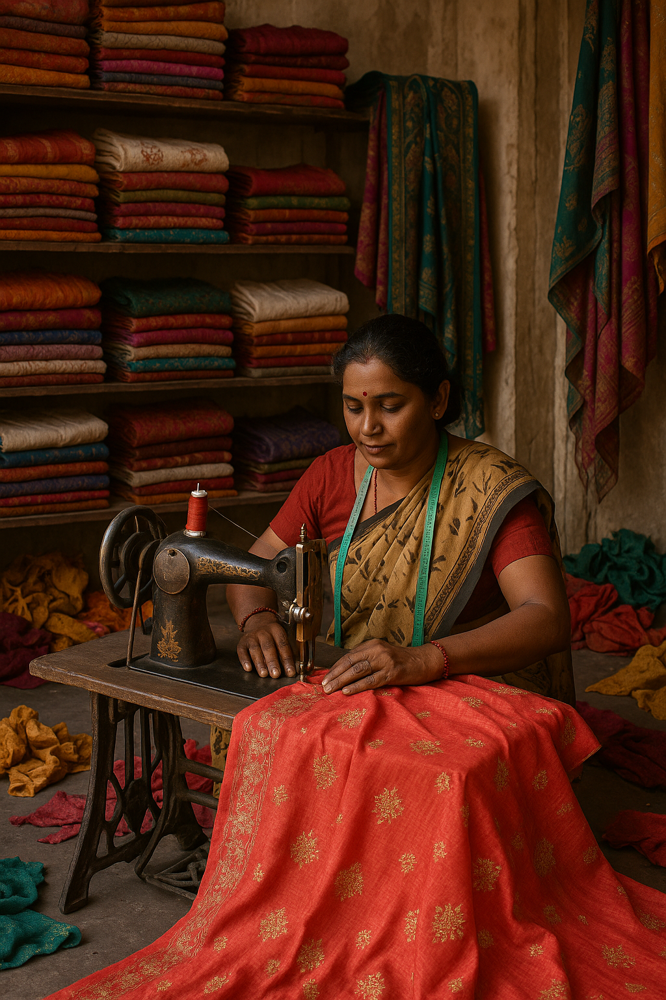
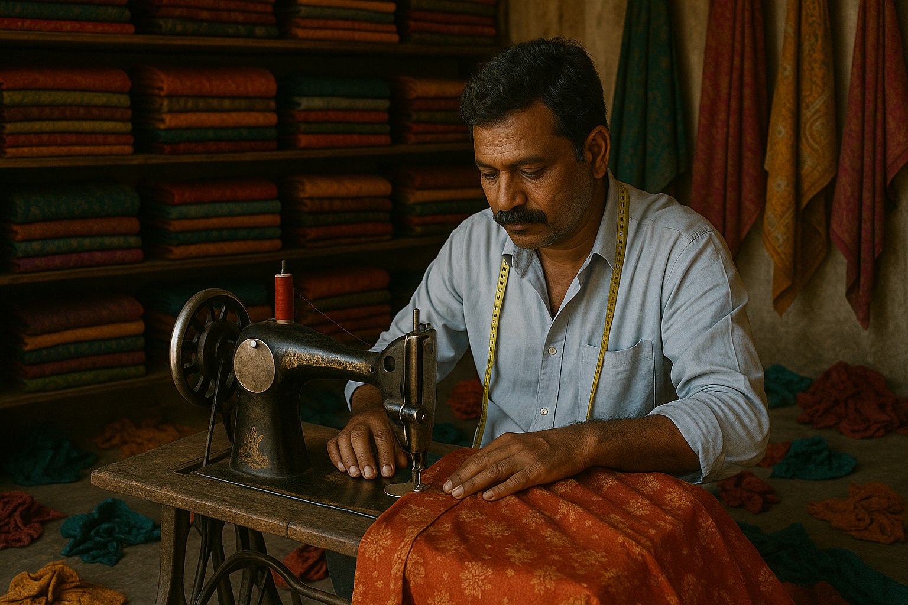
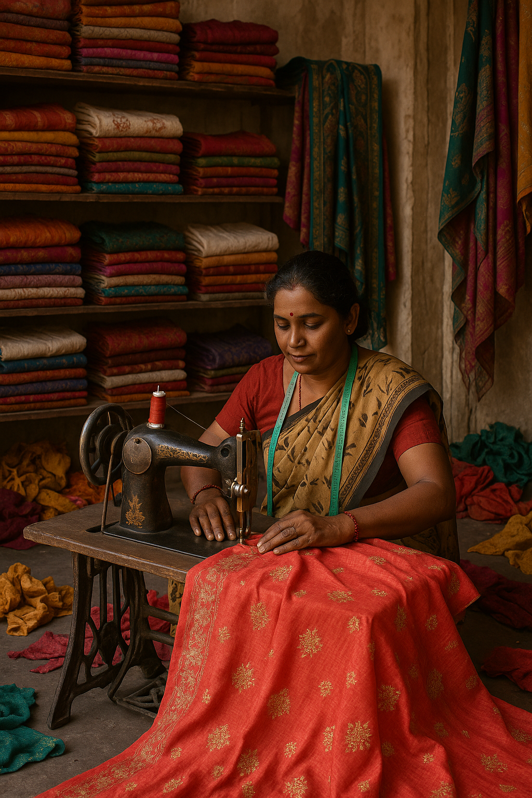
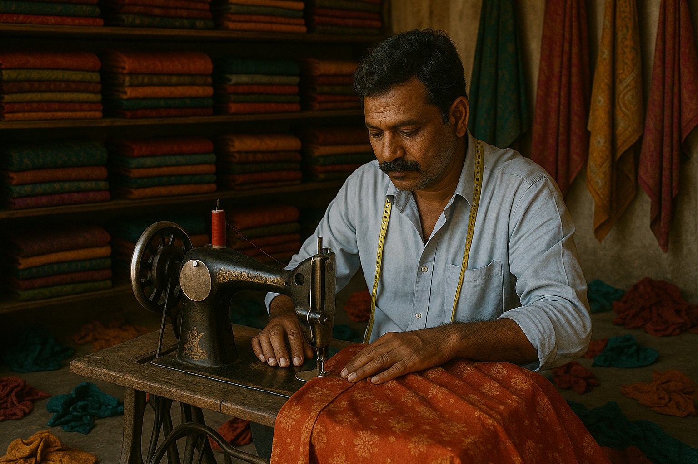
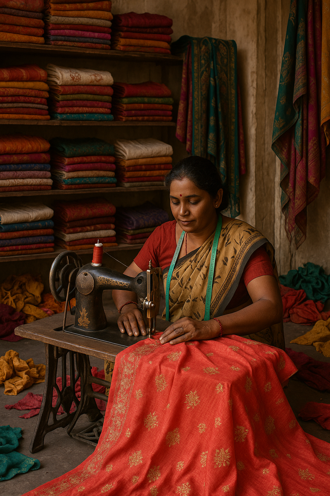
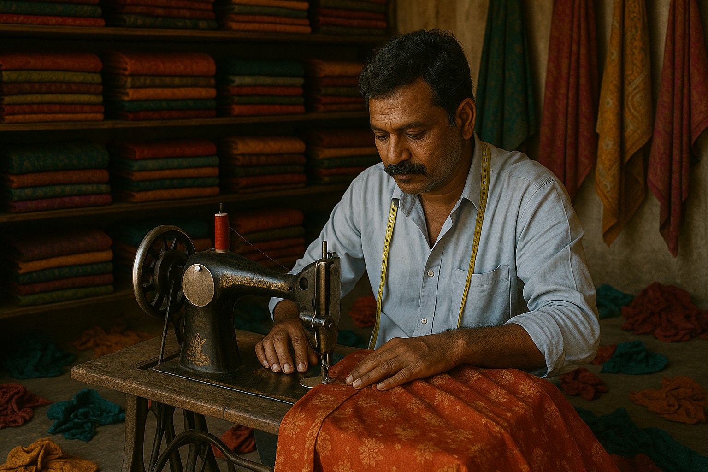

In a world ruled by readymade fashion, it’s easy to forget the comfort and charm of custom-stitched clothing. Yet, many people still cherish their old outfits — not just for the fit, but for the feeling they bring. Whether it's a kurta stitched perfectly years ago or a pair of trousers no brand can match — these clothes are more than fabric. They are comfort, memory, and identity.
On the other side are thousands of skilled tailors — men and women who know the art of stitching but lack a modern platform to connect with customers. They wait, hoping someone will walk by or refer them. That gap is what this platform is here to fill.
Our mission is simple: to give talented tailors the digital space they deserve, and to help people find trustworthy tailoring services for clothes that truly matter.
This platform isn’t just a website — it’s a bridge between craftsmanship and comfort. Between the makers and those who still believe in being made-to-measure.
Let’s support each other — stitch by stitch.


Tailoring solutions crafted for every style, size, and story.
From daily wear to designer outfits, we offer perfect-fitting stitching for all ages and genders.
Refit, resize, or repair — we bring your favorite garments back to life with precision work.
Have a design in mind? We bring your ideas to life, stitched with craftsmanship and care.
Need uniforms? We provide bulk stitching for schools, offices, and organizations with consistency and quality.
Special moments need special clothes. We specialize in bridal wear, ethnic outfits, and party-ready custom tailoring.
Curious about pricing? Share your requirements and we'll get back with an exact quote — fast and free.
Get a Quote